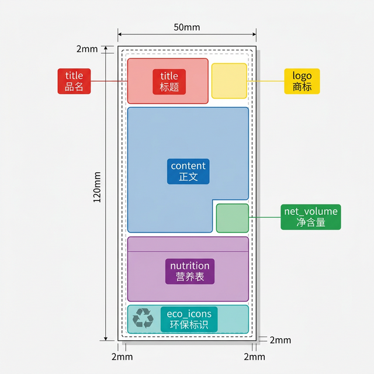

为实现标签内容的自动化排版，需要设计师在每个标签模板的 .ai 源文件中，用彩色矩形标注各功能区域的位置。程序将自动读取这些矩形的坐标，生成排版配置文件。
.ai 文件区域标注（便于后续隐藏/删除）.ai 文件| 颜色 | RGB 值 | 区域名称 | 说明 |
|---|---|---|---|
| 🔴 红色 | R:255 G:0 B:0 |
title 标题 | 产品名称区域 |
| 🔵 蓝色 | R:0 G:0 B:255 |
content 正文 | 配料表、储存条件、产地、进口商等文字 |
| 🟢 绿色 | R:0 G:180 B:0 |
net_volume 净含量 | 净含量数字区域（如 500mL、2.27kg） |
| 🟣 紫色 | R:180 G:0 B:180 |
nutrition 营养表 | 营养成分表区域 |
| 🟡 黄色 | R:255 G:255 B:0 |
logo 商标 | 品牌 Logo / 商标图片区域 |
| 🔹 青色 | R:0 G:180 B:180 |
eco_icons 环保标识 | 回收标识、环保认证图标区域 |
提示：颜色不需要完全精确，程序会自动识别最接近的标准色。只要颜色大方向对即可（红就是红，蓝就是蓝）。

50×120mm 小标签标注示例
从上到下依次标注：
左右分栏标注：
以下区域无需标注，程序会自动处理：
请将标注完成的 .ai 文件直接交付即可。程序运行后会自动生成：
.yaml 配置文件（区域坐标数据）_zones.png 预览图（可用于校验标注是否正确）如有疑问请联系开发团队。